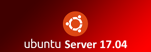

TUTORIALES:
Para que esta creada esta pagina?
Esta pagina esta creada para personas que quieran tener una pagina web en un servidor, ya sea una persona que lo quiera hacer en su casa o una empresa. En ella encontrareis tutoriales para como hacerlo.
Problemas obtenidos
Cuando instalamos el proxmox por primera vez en el servidor tuvimos un fallo que no nos dejaba acceder a su interfaz grafica mediante su ip, ya que pusimos una ip que no era la nuestra y no entraba en nuestro rango asique tuvimos que volver a instalar la maquina desde cero
Cuando intentabamos que apache reconociera otra cosa que no fuese si archivo por defecto "index.html" no reconocia nada y al intentar entrar en nuestra ip salia un error (porque lo veia vacio aunque no lo estuviera), en consecuencia eliminamos nuestro servidor y lo instalamos desde cero
Quienes somos?
Somos cuatro personas que nos dedicamos a hacer tutoriales para empresas.
Nuestros nombres son: Eder, Kevin, Maitane y Veronica. Si quereis que inclullamos algun tutorial mas contactenos mediante: retodw3g2@gmail.com